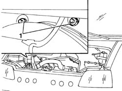
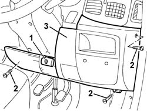
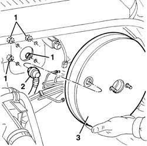

3330D12 BRAKE SERVO - R R FOR RIGHT HAND DRIVE VERSIONS - INCLUDES SEPARATION FROM MASTER CYLINDER(PUMP)
- Path
- Procedures > 33 BRAKING SYSTEM > 3330 HYDRAULIC BRAKING SYSTEM > 3330D BRAKE VACUUM SYSTEM > 3330D12 BRAKE SERVO - R R FOR RIGHT HAND DRIVE VERSIONS - INCLUDES SEPARATION FROM MASTER CYLINDER(PUMP)
- Kind
- repair procedure (removal / refitting; the operation number is the code)
- Applies to
- engines: 2.8 JTD 8V; all production periods
- Interactive page
- https://sloeber94.github.io/elrnDB-fDct/en/#/244001110
Applies to: engines: 2.8 JTD 8V; all production periods
 Removing
Removing
 Refitting
Refitting- Position the vehicle on the lift.
- Disconnect the negative battery lead.
 | Description | Connector |
|---|---|---|
. | Battery | A001B |
Op. 3330C30 BRAKE FLUID RESERVOIR - R + R AND WASH INSIDE
Op. 3330C10 MASTER CYLINDER (PUMP) - R + R
1. Working via the engine compartment, undo the nuts fixing the pedal assembly to the bodyshell.

Applies to: engines: 2.8 JTD 8V; all production periods
1. Lift up the steering wheel adjustment lever.
2. Undo the panel fixing bolts.
3. Remove the panel, releasing it from the inner retainers.

Applies to: engines: 2.8 JTD 8V; all production periods
Op. 4110A11 STEERING WHEEL - R+R FOR REPLACEMENT OR CHECK FOR VERSIONS WITH AIR BAG
Op. 5550A12 COMPLETE STALK UNIT - R+R FOR VERSIONS WITH AIR BAG
Op. 5520A12 IGNITION SWITCH ASSEMBLY - R R FOR VERSIONS WITH AIR BAG
Op. 7040A20 LEFT DASHBOARD LOWER TRIM - R.R.
Op. 4110A20 STEERING WHEEL ADJUSTMENT DEVICE - CHECK
Op. 3330B42 PEDAL UNIT MOUNT - R RFOR RIGHT HAND DRIVE VERSIONS
Op. 0010T20 COOLANT CHECK DENSITY AND TOP UP IF NECESSARY
See in Op. 1088B10
See in Op. 1080C17
See in Op. 1080C16
See in Op. 1048A21
See in Op. 1048B22
See in Op. 1048B14
Op. 1088D67 COOLANT PIPE BETWEEN COOLANT RESERVOIR AND THERMOSTAT - R.R.
See in Op. 1016A10
Op. 5520C62 HEATING FLANGE FOR COLD STARTING - R.R.
Op. 5520C64 CONNECTOR BETWEEN HEATING FLANGE AND INTAKE MANIFOLD - R.R.
Op. 7055B54 UNDER-ENGINE GUARD - R R
See in Op. 1080C10
Op. 1080C50 PIPE CARRYING EXHAUST GAS TO E.G.R. VALVE - R + R
See in Op. 1080C80
Op. 1072B11 INTAKE MANIFOLD - R R AND REPLACE GASKET FOR VERSIONS WITH AIR CONDITIONER
1. Undo the nuts fixing the brake servo to the bodyshell.
2. Disconnect the single-acting valve from the brake servo.
3. Remove the brake servo from the housing.

Applies to: engines: 2.8 JTD 8V; all production periods
Refitting
Removing- Place the brake servo in position, connect the single-acting valve and tighten the brake servo fixing nuts.
 | Value - daNm | Fastening | Component | Ø |
|---|---|---|---|---|
. | 2.0 | Nut | BRAKE SERVO | M8 |
- Connect the single-acting valve to the brake servo.
Op. 1072B11 INTAKE MANIFOLD - R R AND REPLACE GASKET FOR VERSIONS WITH AIR CONDITIONER
See in Op. 1080C80
Op. 1080C50 PIPE CARRYING EXHAUST GAS TO E.G.R. VALVE - R + R
See in Op. 1080C10
Op. 7055B54 UNDER-ENGINE GUARD - R R
Op. 5520C64 CONNECTOR BETWEEN HEATING FLANGE AND INTAKE MANIFOLD - R.R.
Op. 5520C62 HEATING FLANGE FOR COLD STARTING - R.R.
See in Op. 1016A10
Op. 1088D67 COOLANT PIPE BETWEEN COOLANT RESERVOIR AND THERMOSTAT - R.R.
See in Op. 1048B14
See in Op. 1048B22
See in Op. 1048A21
See in Op. 1080C16
See in Op. 1080C17
See in Op. 1088B10
Op. 0010T20 COOLANT CHECK DENSITY AND TOP UP IF NECESSARY
Op. 3330B42 PEDAL UNIT MOUNT - R RFOR RIGHT HAND DRIVE VERSIONS
Op. 4110A20 STEERING WHEEL ADJUSTMENT DEVICE - CHECK
Op. 7040A20 LEFT DASHBOARD LOWER TRIM - R.R.
Op. 5520A12 IGNITION SWITCH ASSEMBLY - R R FOR VERSIONS WITH AIR BAG
Op. 4110A11 STEERING WHEEL - R+R FOR REPLACEMENT OR CHECK FOR VERSIONS WITH AIR BAG
- Position the lower steering column trim and fasten it.
- Position the lower dashboard trim and fasten it.
- Working via the engine compartment, tighten the nuts fixing the pedal assembly to the bodyshell.
| Value - daNm | Fastening | Component | Ø |
|---|---|---|---|---|
. | 1.5 | Nut | PEDAL MOUNT | M8 |
Op. 3330C30 BRAKE FLUID RESERVOIR - R + R AND WASH INSIDE
Op. 3330C10 MASTER CYLINDER (PUMP) - R + R
- Connect the negative battery lead.
| Description | Connector |
|---|---|---|
. | Battery | A001B |
Op. 3330A14 FRONT OR REAR HYDRAULIC BRAKE SYSTEM - BLEED
- Remove the vehicle from the lift.
Topics linked from this page (17)
- 0010T20 COOLANT CHECK DENSITY AND TOP UP IF NECESSARY
- 1072B11 INTAKE MANIFOLD - R R AND REPLACE GASKET FOR VERSIONS WITH AIR CONDITIONER
- 1080C50 PIPE CARRYING EXHAUST GAS TO E.G.R. VALVE - R + R
- 1088D67 COOLANT PIPE BETWEEN COOLANT RESERVOIR AND THERMOSTAT - R.R.
- 3330A14 FRONT OR REAR HYDRAULIC BRAKE SYSTEM - BLEED
- 3330B42 PEDAL UNIT MOUNT - R RFOR RIGHT HAND DRIVE VERSIONS
- 3330C10 MASTER CYLINDER (PUMP) - R + R
- 3330C30 BRAKE FLUID RESERVOIR - R + R AND WASH INSIDE
- 4110A11 STEERING WHEEL - R+R FOR REPLACEMENT OR CHECK FOR VERSIONS WITH AIR BAG
- 4110A20 STEERING WHEEL ADJUSTMENT DEVICE - CHECK
- 4110A31 MOUNT WITH STEERING CONTROL SHAFTS - RR - INCLUDES RR STEERING WHEEL FOR VERSIONS WITH AIR BAG
- 5520A12 IGNITION SWITCH ASSEMBLY - R R FOR VERSIONS WITH AIR BAG
- 5520C62 HEATING FLANGE FOR COLD STARTING - R.R.
- 5520C64 CONNECTOR BETWEEN HEATING FLANGE AND INTAKE MANIFOLD - R.R.
- 5550A12 COMPLETE STALK UNIT - R+R FOR VERSIONS WITH AIR BAG
- 7040A20 LEFT DASHBOARD LOWER TRIM - R.R.
- 7055B54 UNDER-ENGINE GUARD - R R